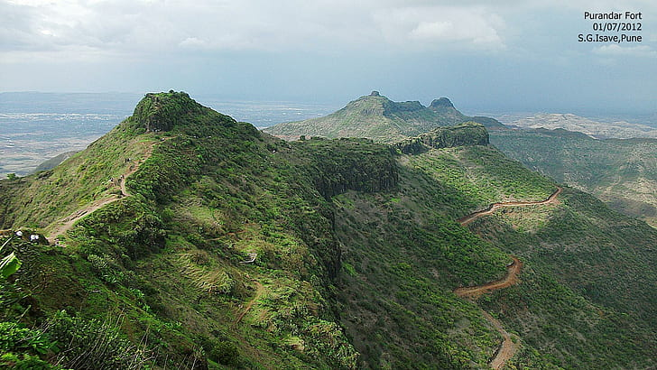

Raigad
In 1674, Shivaji was crowned king of the Hindavi Swaraj in a lavish ceremony at Raigad fort. ...Read moreSinhagad
Previously known as Kondhana, the fort has a great history of Tanaji Malusare. ...Read more
Panhala
Panhala would be the second-most important fort in the Maratha empire after the capital, Raigad. ...Read more
Pratapgad
It is famous for the Battle of Pratapgad between Chattrapati Shivaji Maharaj and Afzal Khan ...Read moreShivneri
Chhatrapati Shivaji Maharaj was born in 1630 in Shivneri, Pune.This fort was mainly used ...Read more

Purandar
Purandar is known as birthplace of Chhatrapati Sambhaji Maharaj(Second Chhatrapati). ...Read moreTorna
It is historically significant because it was the first fort captured by Shivaji Maharaj. ...Read more
Murud-Janjira
Murud-Janjira Fort is situated on an oval-shaped rock off the Arabian Sea coast near city Murud. ...Read more